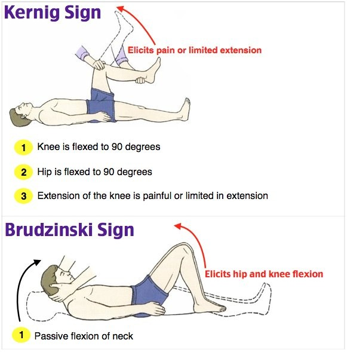
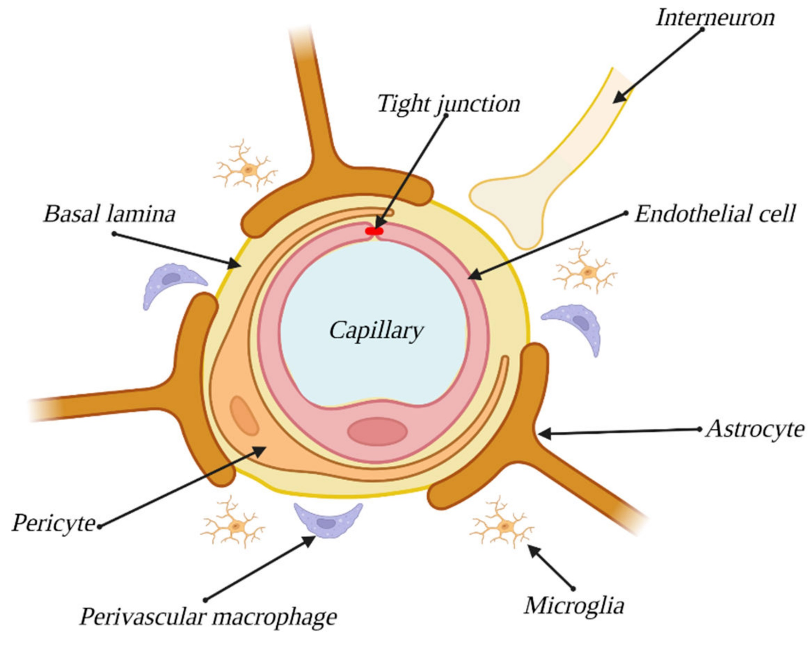
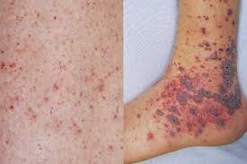
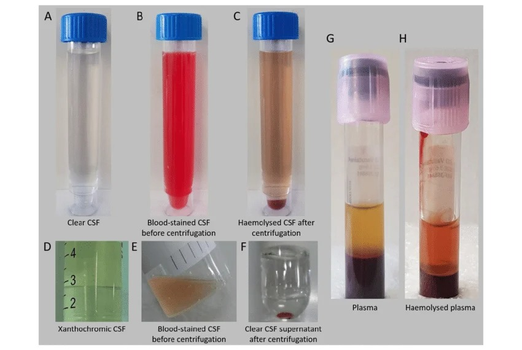

Meningitele Infecțioase
Meningita bacteriană · Meningita virală · Meningita TBC · Meningita criptococică · Diagnostic diferențial LCR
Meningita bacteriană netratată are mortalitate >90%. Chiar și cu tratament optim, mortalitatea rămâne 10-25%, iar fiecare oră de întârziere a antibioterapiei crește mortalitatea cu 3-6%. Ca medic de familie, vei fi adesea primul care evaluează un pacient cu febră și cefalee — trebuie să recunoști rapid semnele de alarmă și să inițiezi tratamentul empiric ÎNAINTE de a avea confirmarea de laborator. Incidența globală variază de la ~0,9/100.000 în țările dezvoltate la 80/100.000 în Africa sub-sahariană. România are particularități importante: prevalență crescută a tuberculozei (68,5/100.000) și epidemii ciclice de meningită meningococică la interval de ~10 ani.
Sindromul meningeal — Recunoașterea clinică
Meningitele infecțioase reprezintă urgențe medicale caracterizate prin pătrunderea și multiplicarea agenților patogeni la nivelul membranelor care învelesc axul cerebrospinal, cu producerea unei inflamații la acest nivel. Suspiciunea de meningită se ridică în fața unui tablou clinic dominat de febră, cefalee intensă, vărsături „în jet" (fără greață prealabilă), fotofobie și rigiditate nucală, eventual însoțite de alterarea stării de conștiență sau convulsii.
Triada clasică — febră, cefalee și rigiditate nucală — este prezentă la mai puțin de 50% dintre pacienții cu meningită bacteriană confirmată. De aceea, diagnosticul nu trebuie exclus doar pe baza absenței unui singur element al triadei. La nou-născuți, rigiditatea nucală poate lipsi complet — fontanela bombată și iritabilitatea paradoxală (copilul plânge mai tare când este luat în brațe) sunt echivalentele sindromului meningeal la această vârstă.
Semnele meningeale clasice includ: semnul Kernig (rezistență sau durere la extensia genunchiului cu șoldul flectat la 90°), semnul Brudzinski (flexia pasivă a gâtului determină flexia reflexă a șoldurilor și genunchilor) și rigiditatea nucală (rezistență la flexia pasivă a gâtului). Examinarea presupune ca pacientul să fie în decubit dorsal, relaxat. Specificitatea acestor semne este bună (~95%), dar sensibilitatea este scăzută (~50%), ceea ce înseamnă că un test negativ nu exclude diagnosticul.
Red flags care impun evaluare de urgență pentru meningită: cefalee severă cu debut brusc, febră >38°C asociată cu rigiditate nucală, alterarea stării de conștiență, erupție purpurică/petșială (sugestivă pentru meningococcemie), convulsii febrile la adult, cefalee progresivă cu vârsături „în jet".

- Semnul Kernig (sus): pacientul este în decubit dorsal, genunchiul și șoldul sunt flectate la 90°. La tentativa de extensie a genunchiului, apare durere sau rezistență (limitarea extensiei), indicând iritație meningeală. Durerea este cauzată de tracțiunea rădăcinilor nervoase lombare inflamate.
- Semnul Kernig (sus): pacientul este în decubit dorsal, genunchiul și șoldul sunt flectate la 90°. La tentativa de extensie a genunchiului, apare durere sau rezistență (limitarea extensiei), indicând iritație meningeală. Durerea este cauzată de tracțiunea rădăcinilor nervoase lombare inflamate.
- Semnul Brudzinski (jos): la flexia pasivă a gâtului, pacientul prezintă flexia involuntară a șoldurilor și genunchilor. Acest reflex apare deoarece flexia cervicală transmite tensiune prin meningele inflamat, provocând un reflex de protecție prin flexia membrelor inferioare.
- Limitări: ambele semne au sensibilitate de doar ~50% — absența lor NU exclude meningita.
Inflamația meningeală iritează rădăcinile nervoase cervicale (C1-C4), provocând contractură reflexă a mușchilor extensori ai gâtului. Nu este „gâtul țeapăn" de la o răceală — este un semn de iritație meningeală care necesită ACȚIUNE IMEDIATĂ. Rigiditatea este rezistență la flexia pasivă a gâtului (nu la rotație!). Dacă pacientul nu poate atinge sternul cu bărbia la flexia pasivă, dar rotația cervicală este liberă, se suspectează iritație meningeală, nu patologie cervicală mecanică.
Mai puțin de 50% din pacienții cu meningită bacteriană confirmată prezintă triada clasică completă (febră + cefalee + rigiditate nucală). Dacă sunt prezente doar 2 din 3 elemente, inițiază evaluarea de urgență! La vârstnici, singurele semne pot fi confuzia și febra. La nou-născuți, fontanela bombată și iritabilitatea paradoxală sunt echivalentele sindromului meningeal.
B) GREȘIT — RMN-ul cerebral nu este investigația de primă linie în meningita acută. Este costisitor, durează mult și nu aduce informații critice în primele ore de management.
D) GREȘIT — Puncția lombară este importantă pentru diagnostic etiologic, dar antibioterapia NU se întârzie pentru PL! Ordinea corectă este: hemocultură → antibiotic → PL (dacă nu sunt contraindicații).
E) GREȘIT — CT-ul cerebral se face doar dacă sunt semne de hipertensiune intracraniană (edem papilar, deficit neurologic focal, convulsii, alterare severă a conștienței cu GCS <10). Așteptarea CT-ului întârzie tratamentul, iar fiecare oră de întârziere crește mortalitatea cu 3-6%.
Etiologie și clasificare
Meningitele infecțioase pot fi produse de o mare varietate de agenți microbieni: bacterii, virusuri, fungi și paraziți. Stabilirea rapidă a etiologiei este de importanță vitală pentru alegerea tratamentului antimicrobian adecvat și, în unele cazuri, instituirea măsurilor de profilaxie pentru contacte.
Clasificarea după etiologie este esențială din perspectiva tratamentului. Cele mai frecvente cauze sunt: enterovirusurile (>90% din meningitele virale), Streptococcus pneumoniae și Neisseria meningitidis (meningitele bacteriene comunitare la adult) și Mycobacterium tuberculosis (meningitele cronice — relevanță deosebită în România datorită prevalenței crescute a TBC).
Etiologia se corelează cu vârsta — un principiu fundamental pentru alegerea antibioterapiei empirice:
Etiologia meningitelor bacteriene în funcție de vârstă
| Grupa de vârstă | Agenți etiologici principali | Antibioterapie empirică |
|---|---|---|
| Nou-născuți (0-28 zile) | Streptococ grup B (50%), E. coli (25%), Listeria monocytogenes | Ampicilină + Cefotaxim (sau Gentamicină) |
| Copii 1 lună - 5 ani | H. influenzae tip b, N. meningitidis, S. pneumoniae | Ceftriaxonă + Vancomicină ± Dexametazonă |
| Copii >5 ani și adulți 18-60 ani | S. pneumoniae (60%), N. meningitidis (20%) | Ceftriaxonă + Vancomicină + Dexametazonă |
| Adulți >60 ani | S. pneumoniae (70%), Listeria (20%), BGN | Ceftriaxonă + Ampicilină + Vancomicină + Dexametazonă |
| Imunodeprimați | Listeria, Cryptococcus, BGN, M. tuberculosis | Ceftriaxonă + Ampicilină + Vancomicină ± antifungice |
La >50 ani, alcoolici, gravide, diabetici sau imunodeprimați — adaugă MEREU Ampicilină (2g × 4/zi i.v.) la schema empirică pentru acoperirea Listeria monocytogenes. Listeria este rezistentă la cefalosporine — fără Ampicilină, rămâne neacoperită!
Clasificarea după aspectul LCR orientează diagnosticul etiologic rapid:
Orientare etiologică după aspectul macroscopic al LCR
| Aspect LCR | Etiologie probabilă |
|---|---|
| Franc purulent („zeama de varză") | Bacterii piogene (pneumococ, meningococ, H. influenzae) |
| Clar, „ca apa de stâncă" | Virusuri, M. tuberculosis, fungi, spirochete |
| Tulbure | Bacterii la debut, meningite decapitate, unele virusuri |
| Hemoragic | M. tuberculosis, Listeria, B. anthracis, Y. pestis |
Un LCR clar NU exclude meningita bacteriană! Există două situații în care meningita bacteriană produce un LCR clar: (1) meningita supraacută/fulminantă — invazia masivă a spațiului subarahnoidian rămâne fără răspuns inflamator eficient în primele 24-48h, LCR conține puțini leucocite dar numeroși germeni (aspect de „cultură pură"); (2) meningita „decapitată" — administrarea precoce de antibiotice reduce reacția inflamatorie, mascând aspectul purulent tipic.
Bariera hemato-encefalică și patogenie
Protecția sistemului nervos central față de agresiunile microbiene este asigurată de bariera hemato-encefalică (BHE), o structură complexă formată din endoteliul vascular de sânge (fără fenestații, spre deosebire de alte capilare), joncțiuni strânse (tight junctions) intercelulare, membrană bazală, pericite și prelungiri ale astrocitelor. La nivelul plexurilor coroide, bariera este constituită din epiteliul plat coroidian.

Această diagramă ilustrează componentele structurale ale BHE: capilarul central este înconjurat de celule endoteliale cu joncțiuni strânse (tight junctions), membrană bazală (basal lamina), pericite, macrofage perivasculare și prelungiri ale astrocitelor. Microglia și interneuronii sunt de asemenea reprezentați. Relevanță clinică: integritatea acestor structuri explică de ce antibioticele pătrund slab în SNC în condiții normale, dar penetranța crește semnificativ când meningele sunt inflamate (ex: penicilina atinge concentrații terapeutice în LCR doar în prezența inflamației meningeale)." data-sursa="https://www.mdpi.com/bioengineering/bioengineering-10-00519/article_deploy/html/images/bioengineering-10-00519-g001.png">Această diagramă ilustrează componentele structurale ale BHE: capilarul central este înconjurat de celule endoteliale cu joncțiuni strânse (tight junctions), membrană bazală (basal lamina), pericite, macrofage perivasculare și prelungiri ale astrocitelor. Microglia și interneuronii sunt de asemenea reprezentați....
Această diagramă ilustrează componentele structurale ale BHE: capilarul central este înconjurat de celule endoteliale cu joncțiuni strânse (tight junctions), membrană bazală (basal lamina), pericite, macrofage perivasculare și prelungiri ale astrocitelor. Microglia și interneuronii sunt de asemenea reprezentați. Relevanță clinică: integritatea acestor structuri explică de ce antibioticele pătrund slab în SNC în condiții normale, dar penetranța crește semnificativ când meningele sunt inflamate (ex: penicilina atinge concentrații terapeutice în LCR doar în prezența inflamației meningeale).
Microorganismele ajung la nivelul meningeal pe mai multe căi: diseminare hematogenă (cea mai frecventă — bacteremia din focarele nazofaringiene), extensie prin contiguitate (otite, sinuzite, mastoidite), defecte ale durei mater (posttraumatic, postneurochirurgical), propagare perineurală (de-a lungul nervilor olfactivi pentru N. meningitidis și S. pneumoniae) sau inoculare directă (proceduri neurochirurgicale, puncții lombare).
Odată ajunse în spațiul subarahnoidian, bacteriile se multiplică rapid în LCR — un mediu cu apărare imunitară limitată (lipsa complementului și imunoglobulinelor). Componentele bacteriene (lipopolizaharide, peptidoglicani, acizi teicoici) sunt recunoscute de receptorii Toll-like (TLR-2, TLR-4, TLR-9), declanșând o cascadă citokinică masivă: IL-1, IL-6, TNF-α, prostaglandine și chemokine. Această cascadă duce la: creșterea permeabilității BHE → edem vasogenic, influx de neutrofile → edem citotoxic, obstrucția circulației LCR → edem interstițial și, în final, creșterea presiunii intracraniene cu risc de hernie cerebrală.
Administrarea Dexametazonei (0,15 mg/kg la 6h, 4 zile) cu 15-20 minute ÎNAINTE de prima doză de antibiotic reduce mortalitatea și sechelele auditive în meningita pneumococică. Mecanismul: liza bacteriană indusă de antibiotic eliberează masiv componente celulare (LPS, acizi teicoici) → amplificarea cascadei inflamatorii → edem cerebral sever. Dexametazona administrată PROFILACTIC atenuează acest „burst" inflamator. Dacă antibioticul a fost deja administrat, beneficiul Dexametazonei scade semnificativ.
Meningita meningococică
Neisseria meningitidis (meningococul) este un coc Gram negativ dispus în diplo, cu factori de virulență importanți: pilii (aderența de celulele gazdă), capsula polizaharidică (rol antifagocitar) și lipopolizaharidele membranare (rol de endotoxină). Pe baza antigenelor capsulare se descriu mai multe serotipuri (A, B, C, X, Y, W135), cu distribuție geografică variabilă.
Epidemiologie în România: incidența variază de la 0,9-2,3/100.000 locuitori interepidemic (200-500 cazuri/an) la 5,2-11,4/100.000 în perioadele epidemice, care survin ciclic la aproximativ 10 ani. Omul este singura gazdă — sursa de infecție sunt bolnavii și purtătorii nazofaringieni sănătoși. Transmiterea este aerogenă, necesitând contact strâns. Factori de risc: aglomerarea (cazărmi, cămine), infecție virală recentă a căilor respiratorii, asplenie, deficite ale complementului (C5-C9).
Patogenie: După colonizarea nazofaringelui → bacteriemie → cantonare la nivel meningeal. Formele severe se pot însoți de șoc septic (endotoxina meningococică), CID (coagulare vasculară diseminată) și sindromul Waterhouse-Friderichsen (insuficiență suprarenală acută prin hemoragie bilaterală a suprarenalelor).
Tabloul clinic include variante de la bacteriemie tranzitorie până la boala fulminantă rapid fatală. Semnul clinic cel mai sugestiv este exantemul petșial/echimotic — secundar fenomenelor vasculare, cu petșii care pot conflua în plăci echimotice, uneori cu necroze.

- Ce observi: Două imagini comparative ale tegumentelor. În stânga: leziuni petșiale multiple, mici, diseminate pe tegumente — puncte roșii-violacee care nu dispar la vitropresiune (compresie cu un pahar). În dreapta: leziuni echimotice extinse la nivelul membrului inferior (gleznă și picior), cu colorație violacee-neagră și tendință la confluare, sugestive pentru purpura fulminans.
- Ce observi: Două imagini comparative ale tegumentelor. În stânga: leziuni petșiale multiple, mici, diseminate pe tegumente — puncte roșii-violacee care nu dispar la vitropresiune (compresie cu un pahar). În dreapta: leziuni echimotice extinse la nivelul membrului inferior (gleznă și picior), cu colorație violacee-neagră și tendință la confluare, sugestive pentru purpura fulminans.
- Ce sugerează: Spectrul leziunilor cutanate din meningococcemie — de la petșii izolate (stadiu precoce, potențial reversibil) la purpura fulminans cu necroze tisulare (stadiu tardiv, asociat cu CID și prognostic rezervat). Petșiile apar prin microtrombii în vasele mici ale dermului, secundari endotoxinei meningococice.
- Diferențial vizual: Petșiile meningococice NU dispar la vitropresiune — spre deosebire de erupțiile maculoase eritematoase virale care dispar. Testul paharului (glass test) = element clinic esențial în urgență.
Orice pacient cu febră și erupție petșială/purpurică care NU dispare la vitropresiune trebuie tratat ca meningococcemie până la proba contrarie. Administrează Ceftriaxonă 2g i.v. IMEDIAT — chiar înainte de transport la spital! Testul paharului: apasă un pahar transparent pe leziune — dacă nu dispare, este petșie, nu eritem.
Tratament: Ceftriaxonă 2-4 g/zi i.v. (75-100 mg/kg/zi), timp de 7 zile. Chimioprofilaxie contacte apropiate: Ciprofloxacin 500 mg doză unică (adulți), sau Ceftriaxonă 125-250 mg i.m. doză unică, sau Rifampicină 600 mg/zi × 2 zile (adulți).
Vaccinare: Vaccin conjugat contra serotipurilor A, C, Y, W135 și serogroup B. CDC recomandă vaccinarea de rutină la 11-18 ani și la persoanele cu risc crescut (asplenie, deficite de complement).
Evoluție: Cea mai mică mortalitate dintre meningitele bacteriene (<10% sub tratament). Sechele neurologice în 11-19% din cazuri (hipoacuzie, paraplegie, hidrocefalie). Serotipul B are cea mai crescută mortalitate.
B) GREȘIT — Observația fără chimioprofilaxie este insuficientă la contactele apropiate. Purtătorii nazofaringieni pot dezvolta boala invazivă rapid.
C) GREȘIT — Ceftriaxonă 2g/zi × 7 zile este schema de tratament al meningitei, nu de profilaxie. Pentru profilaxie, doza este 250 mg i.m., doză unică.
E) GREȘIT — Izolarea fără chimioprofilaxie nu previne boala la purtătorii nazofaringieni. Meningococul nu necesită izolare de 14 zile — chimioprofilaxia elimină portajul nazofaringian.
Meningita pneumococică
Meningita cu Streptococcus pneumoniae este cea mai frecventă meningită bacteriană la adult și a doua cauză la copil. Pneumococul este un coc Gram pozitiv, lanceolat, incapsulat, dispus în diplo, care produce hemoliză de tip alfa pe mediul geloză-sânge.
Epidemiologie: Incidența medie de 1,3 cazuri/100.000 locuitori/an, relativ constantă. Surse de infecție: bolnavi și purtători nazofaringieni sănătoși (40-60% la copii). Transmiterea aerogenă. Grupuri cu risc crescut: asplenie (anatomică sau funcțională), defecte structurale cu scurgeri de LCR (fracturi de bază de craniu), otite și sinuzite cronice, deficite de complement (C5-C9), deficite de IgG2, vârstnici, consumatori cronici de alcool.
Particularități clinice: Poate produce forme hipertoxice cu evoluție rapidă (24-48h) spre deces și forme recidivante (chiar zeci de episoade) — datorate persistenței microbului în focare otice/sinusale de la care se produce reinfecția meningeală.
Tratament: Cefotaxim (2g la 8h) sau Ceftriaxonă (2-4 g/zi) + Vancomicină (în funcție de fenotipul local de rezistență). Durata: 10-14 zile. În România, >50% din tulpini au sensibilitate diminuată la penicilină (conform studiului MAR-T), ceea ce exclude penicilina ca opțiune empirică.
Profilaxie: Vaccin polizaharidic conjugat — indicat la copii cu siclemie, asplenie, sindrom nefrotic, imunosupresie, infecție HIV, și la adulții cu risc crescut. Nu sunt necesare măsuri de chimioprofilaxie a contactelor.
Meningococ
- Mortalitate sub tratament <10%
- Exantem petșial/echimotic caracteristic
- Forme recidivante rare
- Chimioprofilaxie contacte OBLIGATORIE
- Durata tratament: 7 zile
- Ceftriaxonă (monoterapie de regulă suficientă)
- Evoluție bună chiar dacă pacientul prezintă comă la debut
Pneumococ
- Mortalitate 7,5-40% (cea mai mare)
- Fără exantem caracteristic
- Forme recidivante frecvente (focare otice)
- Chimioprofilaxie contacte NU este necesară
- Durata tratament: 10-14 zile
- Ceftriaxonă + Vancomicină (rezistență la penicilină >50%)
- Prognostic mai rezervat, sechele neurologice frecvente
Meningita cu Haemophilus influenzae și Listeria
Meningita cu Haemophilus influenzae: Cocobacil Gram negativ, serotipul b (Hib) cel mai important. Incidența a scăzut dramatic în țările cu vaccinare universală (~0,4/100.000). În România, incidența la copii <5 ani este de 7,6/100.000 — similară zonelor fără vaccinare. La copii, febra și semnele meningeale urmează de obicei o infecție de căi respiratorii superioare. Asocierea Dexametazonei (0,6 mg/kg/zi, 4 subdoze, 4 zile) reduce sechelalele neurologice la copilul >2 luni. Tratament: Ceftriaxonă 75-100 mg/kg/zi, 7-10 zile. Profilaxie contacte: Rifampicină 4 zile.
Meningita cu Listeria monocytogenes: Bacil Gram pozitiv, facultativ anaerob, cu proprietatea unică de a se dezvolta la temperatura frigiderului. Sursa alimentară: vegetale crude, lapte nepasteurizat, brânzeturi moi, carne crudă/insuficient preparată. Afectează preferențial: nou-născuți (transmitere verticală), vârstnici >60 ani, gravide, imunodeprimați (limfoame, transplantați, corticoterapie cronică, SIDA). Mortalitate mare: 17-50%.
Listeria monocytogenes este rezistentă la TOATE cefalosporinele (inclusiv Ceftriaxonă și Cefotaxim). Tratamentul se face cu Ampicilină (2g × 4/zi la adult, 200 mg/kg/zi la copil) ± Gentamicină. Alternativă în caz de alergie la betalactamide: Cotrimoxazol (TMP 20 mg/kg/zi) sau Meropenem. Durata: 2-3 săptămâni (3-6 săptămâni la imunodeprimați).
C) GREȘIT — Schema acoperă pneumococul rezistent (Vancomicină) dar NU acoperă Listeria. La >60 ani cu factori de risc, Ampicilina este obligatorie. Lipsește și Dexametazona adjuvantă.
D) GREȘIT — Meropenemul acoperă Listeria și bacteriile Gram negative, dar nu este prima opțiune empirică în meningita comunitară la vârstnic. Schema standard rămâne Ceftriaxonă + Vancomicină + Ampicilină.
E) GREȘIT — Ceftriaxonă în monoterapie nu acoperă Listeria (rezistentă la cefalosporine) și nu acoperă pneumococii rezistenți la penicilină. Pacientă >60 ani, alcoolică, diabetică = risc crescut pentru Listeria.
Meningita tuberculoasă
Meningita tuberculoasă este cea mai frecventă cauză de meningită cronică (evoluție >30 zile) și are o relevanță deosebită în România, unde prevalența tuberculozei este de 68,5/100.000 (una dintre cele mai ridicate din Europa). Aproximativ 10% din pacienții cu tuberculoză dezvoltă afectare neurologică.
Debutul este diferit de meningitele bacteriene acute: insidios (săptămâni), cu un prodrom nespecific marcat de indispoziție, cefalee intermitentă, subfebrilitate și inapetență. Progresia include cefalee permanentă, vărsături, stare confuzională și, în cele din urmă, semne de iritație meningeală și semne neurologice de focar (pareze de nervi cranieni, în special perechea VI). La adulți, febra este prezentă în doar 60-80% din cazuri.
Factori de risc: alcoolism, diabet zaharat, chimioterapie, malnutriție, sarcină, sarcoidoză, limfom Hodgkin, infecția HIV. La copii, >78% provin din familii cu status socio-economic scăzut, iar în >22% există contact intrafamilial cu un bolnav TBC.
LCR: clar, hipertensiv, celularitate moderată (zeci-sute elemente/mm³) cu predominanță limfocitară (>90%), proteinorahie crescută (>200 mg/dL), glucorahie scăzută (<40% din glicemie). Diagnosticul etiologic: frotiu Ziehl-Neelsen (sensibilitate scăzută), cultură pe medii speciale (2-8 săptămâni!), GeneXpert MTB/RIF Ultra (sensibilitate 58-94%, specificitate >99%).
Stadii clinice de gravitate: I — pacient rațional, fără semne de focar; II — confuzie, deficite neurologice de focar; III — stupor, paraplegic/hemiplegic. Prognosticul se corelează direct cu stadiul la diagnostic.
Tratament: Regim cu 4 antituberculoase (HREZ): Hidrazidă (Izoniazidă) 5-10 mg/kg/zi, Rifampicină 10 mg/kg/zi, Etambutol 15-25 mg/kg/zi, Pirazinamidă 25-30 mg/kg/zi — faza de atac 2 luni, apoi Hidrazidă + Rifampicină faza de întreținere, total 6-12 luni (12 luni la copii). Asocierea Piridoxinei (vitamina B6) previne neuropatia periferică indusă de Izoniazidă. Coinfecția HIV-TBC: mortalitate 20% în era HAART (80% pre-HAART).
B) GREȘIT — Meningita virală are LCR cu celularitate mai modestă, proteinorahie ușor crescută și glucorahie NORMALĂ. Glucorahia sever scăzută (raport 0,25) exclude etiologia virală.
C) GREȘIT — Meningita pneumococică are debut acut, LCR purulent cu PMN >1000/mm³ și evoluție rapidă. Debutul insidios pe 3 săptămâni exclude pneumococul.
D) GREȘIT — Meningita criptococică este o posibilitate la imunodeprimați, dar alcoolismul singur nu este factorul de risc tipic (ci HIV, transplant, corticoterapie). LCR-ul criptococic are celularitate mai mică (10-100/mm³) și proteinorahie mai modestă. Pareza de nerv cranian VI orientează mai mult spre TBC.
Meningitele virale și criptococică
Meningitele virale sunt cele mai frecvente forme de meningită. Enterovirusurile (ECHO, Coxsackie) sunt responsabile de >90% din cazuri, urmate de virusul urlian, HSV-2, virusul West Nile și adenovirusuri. Evoluția este de obicei benignă și autolimitată (2-4 săptămâni), fără necesitatea unui tratament etiologic specific (cu excepția meningitei herpetice — Aciclovir).
LCR-ul viral: clar, celularitate modestă (zeci-sute de elemente), predominanță limfocitară, proteinorahie ușor-moderat crescută, glucorahie NORMALĂ (>60% din glicemie) — element esențial de diferențiere față de meningitele bacteriene și TBC.
Particularități ale meningitelor virale în România: - Meningita urliană: incidență dependentă de acoperirea vaccinală; în perioadele epidemice, prevalența afectării meningeale ajunge la 39%. Febra și cefaleea sunt prezente în 100% din cazuri. - Virusul West Nile: epidemie în 1996-1997 în zona București-Dunăre (~400 cazuri), cu forme neurologice predominante. Transmitere prin țânțari Culex pipiens. Vârstnicii sunt mai predispuși la forme severe. - Enterovirusuri ECHO/Coxsackie: epidemii estivale, transmitere fecal-orală. La copii pot mima meningita bacteriană (petșii în infecțiile ECHO!).
Meningita criptococică (Cryptococcus neoformans) este cea mai frecventă infecție oportunistă a SNC la pacienții HIV, apărând la CD4 <100/mm³. Incidența: 10% în SUA/Europa, 30% în Africa sub-sahariană. Debutul este insidios (zile-săptămâni), cu cefalee, febră și sindrom meningeal/neuropsihiatric. LCR: clar, 10-100 mononucleare/mm³, proteinorahie >100 mg/dL.
Diagnostic criptococoză: colorația cu tus de China (vizualizarea capsulei), cultură pe mediu Sabouraud (7 zile), antigen criptococic în LCR (latex-aglutinare: sensibilitate 99%, specificitate 100%). Tratament: Amfotericină B 0,7 mg/kg/zi + Flucitozină minim 14 zile, apoi consolidare cu Fluconazol. Mortalitate: 21-51%.
Diagnosticul diferențial al meningitelor pe baza LCR
Analiza LCR este investigația esențială pentru diferențierea etiologică a meningitelor. Puncția lombară se efectuează de urgență în absența contraindicațiilor (semne de HTIC: edem papilar, deficit neurologic focal, GCS <10, convulsii recente).
Bacteriană piogenă
- Aspect: tulbure/purulent
- Celularitate: >1.000/mm³
- Formula: predominanță PMN (>80%)
- Proteinorahie: mult crescută (>100 mg/dL)
- Glucorahie: scăzută (<40% din glicemie)
- Colorație Gram: pozitivă în 60-90%
- Tratament: antibioterapie urgentă
Virală
- Aspect: clar
- Celularitate: 10-500/mm³
- Formula: predominanță limfocitară
- Proteinorahie: ușor crescută (50-100 mg/dL)
- Glucorahie: normală (>60% din glicemie)
- Colorație Gram: negativă
- Tratament: suportiv (autolimitat)
Parametrii LCR în diferitele tipuri de meningită
| Parametru | Bacteriană | Virală | TBC | Criptococică |
|---|---|---|---|---|
| Aspect | Purulent/tulbure | Clar | Clar | Clar |
| Celularitate (/mm³) | >1.000 | 10-500 | 50-500 | 10-100 |
| Formula celulară | PMN >80% | Limfocite | Limfocite >90% | Mononucleare |
| Proteinorahie (mg/dL) | >100 | 50-100 | >200 | >100 |
| Glucorahie | Scăzută (<40%) | Normală | Scăzută (<40%) | Normo-/hipoglicorrahie |
| Colorație | Gram (+) 60-90% | Negativă | Ziehl-Neelsen rar (+) | Tus de China (+) |
| Cultură | Pozitivă 24-48h | Rareori (+) | 2-8 săptămâni | 7 zile (Sabouraud) |

- A — LCR clar (normal): aspect limpede, transparent, „ca apa de stâncă" — normal sau sugestiv pentru meningită virală, TBC incipientă sau fungică.
- A — LCR clar (normal): aspect limpede, transparent, „ca apa de stâncă" — normal sau sugestiv pentru meningită virală, TBC incipientă sau fungică.
- B — LCR hemoragic (înainte de centrifugare): aspect franc hemoragic — poate indica puncție traumatică sau hemoragie subarahnoidiană. Testul celor 3 tuburi: în puncția traumatică, sângele se clarifică progresiv de la tubul 1 la tubul 3; în HSA, sângele este uniform în toate tuburile.
- C — LCR hemolizat (după centrifugare): supernatantul rămâne xantocrom (galben-maroniu) = sânge prezent de mai mult timp în LCR (HSA, meningită TBC hemoragică, Listeria).
- D — LCR xantocrom: colorație galben-verzuie — indică prezența bilirubinei din degradarea hemoglobinei (HSA veche) sau proteinorahie foarte crescută (>150 mg/dL).
- E-F — LCR hemoragic vs. supernatant clar: după centrifugare, supernatantul clar = puncție traumatică (sângele e recent, nu a avut timp să se hemolizeze). Supernatantul xantocrom = HSA sau meningită hemoragică.
- Relevanță practică: Aspectul macroscopic al LCR este prima informație disponibilă la patul bolnavului, înainte de rezultatele de laborator, și orientează deciziile terapeutice imediate.
Glucorahia normală (>60% din glicemie) = sugestivă pentru meningită virală. Glucorahia scăzută (<40% din glicemie) = sugestivă pentru meningită bacteriană, TBC sau fungică. Aceasta este cea mai importantă distincție inițială la analiza LCR! Un raport glucorahie/glicemie <0,5 asociat cu proteinorahie >200 mg/dL orientează puternic spre meningita TBC.
2. Predominanța PMN în LCR exclude meningita TBC
3. Proteinorahie >200 mg/dL cu glucorahie scăzută este sugestivă pentru meningita TBC
4. Un LCR clar exclude meningita bacteriană
Conduita terapeutică — Principii generale
Managementul meningitei bacteriene suspectate este o urgență cu protocol strict:
Secvența corectă: 1. Hemocultură (2 seturi) — se recoltează IMEDIAT 2. Dexametazonă 0,15 mg/kg i.v. (maxim 10 mg) — se administrează cu 15-20 minute ÎNAINTE de prima doză de antibiotic 3. Antibioterapie empirică i.v. — se administrează în maxim 30-60 minute de la prezentare 4. Puncție lombară — dacă nu există contraindicații, se efectuează DUPĂ prima doză de antibiotic
Contraindicații pentru PL (necesită CT prealabil): deficit neurologic focal, GCS <10, convulsii recente, edem papilar, imunosupresie severă, suspiciune de leziune ocupatoare de spațiu. IMPORTANT: Dacă PL este amânată pentru CT, antibioterapia NU se amână — se administrează IMEDIAT după hemocultură!
Scheme de antibioterapie empirică în meningita bacteriană
| Categoria | Schema empirică | Durata |
|---|---|---|
| Nou-născuți | Ampicilină + Cefotaxim (sau Gentamicină) | 14-21 zile |
| Copii 1-23 luni | Ceftriaxonă + Vancomicină + Dexametazonă | 10-14 zile |
| Copii 2-18 ani | Ceftriaxonă + Vancomicină + Dexametazonă | 7-14 zile |
| Adulți 18-50 ani | Ceftriaxonă 2g la 12h + Vancomicină + Dexametazonă | 10-14 zile |
| Adulți >50 ani / imunodeprimați | Ceftriaxonă + Ampicilină + Vancomicină + Dexametazonă | 14-21 zile |
| Post-neurochirurgical / post-traumatic | Ceftazidim + Vancomicină | 14-21 zile |
Ajustarea terapiei după identificarea agentului etiologic: N. meningitidis → Ceftriaxonă 7 zile; S. pneumoniae sensibil → Ceftriaxonă 10-14 zile; Listeria → Ampicilină ± Gentamicină 21 zile; H. influenzae → Ceftriaxonă 7-10 zile.
- Ceftriaxonă: adult 2g i.v. la 12h (4g/zi); copil 75-100 mg/kg/zi
- Cefotaxim: adult 2g i.v. la 6-8h (8-12g/zi); copil 200 mg/kg/zi
- Ampicilină: adult 2g i.v. la 4-6h (12g/zi); copil 200-300 mg/kg/zi
- Vancomicină: adult 15 mg/kg i.v. la 8-12h; copil 60 mg/kg/zi
- Dexametazonă: 0,15 mg/kg i.v. la 6h × 4 zile (0,6 mg/kg/zi); se administrează cu 15-20 min ÎNAINTE de prima doză de antibiotic
- Aciclovir (encefalită herpetică): 10 mg/kg i.v. la 8h × 14-21 zile
Glucorahia. Glucorahie normală (>60% din glicemie) = sugestivă pentru meningită virală. Glucorahie scăzută (<40% din glicemie) = sugestivă pentru meningită bacteriană, TBC sau fungică. Bacteriile consumă glucoza din LCR prin glicliză.
Pentru acoperirea Listeria monocytogenes, care este rezistentă la cefalosporine (Ceftriaxonă, Cefotaxim). Listeria afectează preferențial vârstnicii, gravidele, alcolicii și imunodeprimații. Fără Ampicilină, Listeria rămâne complet neacoperită de schema standard cu Ceftriaxonă + Vancomicină.
Hemocultură → Dexametazonă → Antibiotic (în 15-20 minute). Dexametazona se administrează ÎNAINTE de antibiotic pentru a atenua „burst-ul" inflamator cauzat de liza bacteriană. Dacă antibioticul a fost deja administrat, beneficiul Dexametazonei scade semnificativ.
Exantemul petșial/purpuric care NU dispare la vitropresiune (testul paharului). Petșiile apar prin microtrombii vasculari secundari endotoxinei meningococice. Orice pacient cu febră + erupție petșială = meningococcemie până la proba contrarie → Ceftriaxonă 2g i.v. IMEDIAT.
HREZ (4 antituberculoase): Hidrazidă (Izoniazidă) 5-10 mg/kg/zi + Rifampicină 10 mg/kg/zi + Etambutol 15-25 mg/kg/zi + Pirazinamidă 25-30 mg/kg/zi. Faza de atac: 2 luni cu 4 medicamente, apoi faza de întreținere: H + R, durata totală 6-12 luni. Se asociază Piridoxina (vitamina B6) pentru prevenirea neuropatiei induse de Izoniazidă.
Antigenul criptococic în LCR (latex-aglutinare: sensibilitate 99%, specificitate 100%) + colorația cu tus de China (vizualizează capsula fungului). Cultura pe mediu Sabouraud (crește în 7 zile). Apare la pacienții HIV cu CD4 <100/mm³. Tratament: Amfotericină B + Flucitozină minim 14 zile.
Febra și confuzia — Urgența din cabinet
Ești medic de familie. La cabinetul tău se prezintă Maria, fiica unui pacient în vârstă de 68 de ani, cunoscut cu diabet zaharat tip 2 și consum cronic de alcool. Maria relatează că tatăl ei a început să fie „ciudat" de ieri seară — vorbește incoerent, nu a mâncat, a avut febră 39°C acasă. Astăzi dimineață l-a găsit confuz, „nu știe unde este". Nu a avut traumatisme recente.
Examinezi pacientul: febră 39,4°C, TA 95/60 mmHg, AV 115/min, FR 22/min. Facies congestionat, confuz (nu știe data și locul, dar execută comenzi simple — GCS 13: E3V4M6). La examenul neurologic: rigiditate nucală prezentă, Kernig pozitiv bilateral, fără deficit motor focal, fără edem papilar. Nu prezintă erupție cutanată.
B) GREȘIT — Meningita bacteriană suspectată este o URGENȚĂ VITALĂ, nu o consultație programabilă. Pacientul necesită transfer imediat la urgență, nu la neurolog în ambulatoriu.
C) GREȘIT — Ciprofloxacin per os nu este tratamentul meningitei bacteriene (penetranță insuficientă la nivel meningeal). Reevaluarea „a doua zi" este inacceptabilă într-o urgență vitală cu mortalitate >90% fără tratament.
E) GREȘIT — Analizele de laborator la cabinet nu pot confirma sau exclude meningita. Pacientul necesită puncție lombară și neuroimagistică, disponibile doar în spital. Întârzierea transferului este periculoasă.
Pacientul ajunge la urgență în 40 de minute. Ai administrat Ceftriaxonă 2g i.m. înainte de transport. La urgență, echipa efectuează hemocultură, apoi administrează Dexametazonă i.v. urmată de Ceftriaxonă 2g i.v. + Ampicilină 2g i.v. + Vancomicină 1g i.v. Se efectuează PL.
Rezultatele LCR: aspect tulbure, 2.800 leucocite/mm³ (92% PMN), proteinorahie 380 mg/dL, glucorahie 18 mg/dL (glicemie 180 mg/dL, raport = 0,10). Colorație Gram: diplococi Gram pozitivi lancelolați.
B) GREȘIT — M. tuberculosis produce LCR clar cu predominanță limfocitară și evoluție cronică (săptămâni), nu debut acut cu LCR purulent. Nu se vizualizează la colorația Gram (necesită Ziehl-Neelsen).
C) GREȘIT — Enterovirusurile produc LCR clar cu limfocite și glucorahie NORMALĂ. LCR purulent cu glucorahie de 18 mg/dL exclude etiologia virală.
E) GREȘIT — Listeria sunt bacili Gram POZITIVI (nu coci). Formula celulară în meningita listeriană are mai frecvent predominanță mononucleară (1/3 din cazuri).
La 24 de ore, cultura din LCR confirmă Streptococcus pneumoniae cu sensibilitate diminuată la penicilină (CMI = 2 µg/mL), dar sensibil la ceftriaxonă (CMI = 0,5 µg/mL) și vancomicină.
B) GREȘIT — Penicilina G NU este adecvată la CMI = 2 µg/mL (sensibilitate diminuată). În România, >50% din tulpini au sensibilitate diminuată sau rezistență la penicilină.
C) GREȘIT — Ampicilina a fost adăugată empiric pentru acoperirea Listeria. Odată confirmat pneumococul, Ampicilina poate fi oprită (nu este activă pe pneumococ).
D) GREȘIT — Meropenemul nu este prima opțiune în meningita pneumococică comunitară când ceftriaxonă este activă. Este o escaladare inutilă care crește riscul de selectare a rezistenței.
B) GREȘIT — Parțial corect, dar incomplet. Vaccinarea și audiograma sunt necesare, dar la un pacient cu meningită pneumococică trebuie investigată activ o poartă de intrare (sinuzită, otită, fistulă LCR) pentru prevenirea recidivei — caracteristică a meningitei pneumococice.
C) GREȘIT — Audiograma singură este insuficientă. Meningita pneumococică are tendință la recidivă din focare otice/sinusale, necesitând investigarea porții de intrare.
D) GREȘIT — Chimioprofilaxia contactelor este specifică MENINGITEI MENINGOCOCICE, nu pneumococice. Nu sunt necesare măsuri de prevenire a cazurilor secundare în meningita pneumococică.
Diagnostic final: Meningită acută bacteriană cu Streptococcus pneumoniae cu sensibilitate diminuată la penicilină, la un pacient de 68 de ani cu factori de risc (diabet zaharat, alcoolism cronic).
Lecții cheie: - Rolul MF: recunoașterea precoce a sindromului meningeal + transfer urgent + administrarea antibioticului empiric ÎNAINTE de transport dacă acesta durează >30 minute - Schema empirică la >50 ani: Ceftriaxonă + Vancomicină + Ampicilină + Dexametazonă — Ampicilina acoperă Listeria (rezistentă la cefalosporine) - Diplococi Gram pozitivi lancelolați = S. pneumoniae — cea mai frecventă cauză de meningită bacteriană la adult - De-escaladarea ghidată de antibiogramă: se opresc antibioticele inutile odată ce agentul etiologic este confirmat - Follow-up MF: investigarea porții de intrare (risc de recidivă!), audiogramă, vaccinare, control comorbidități